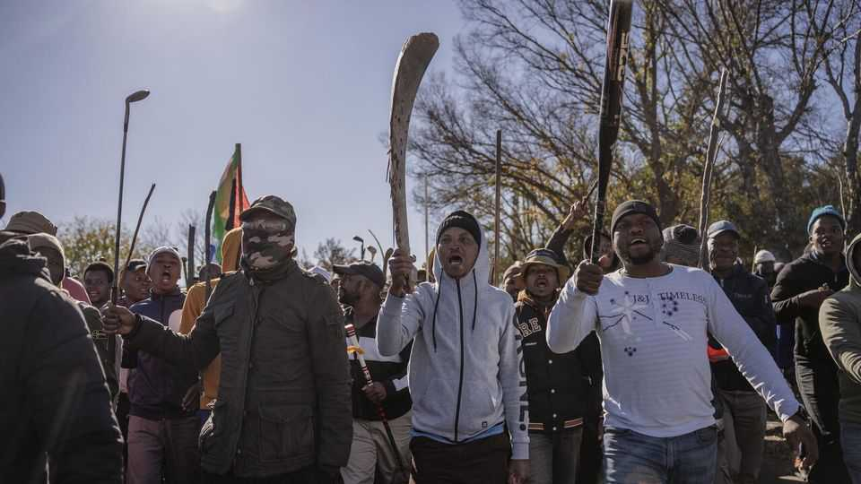
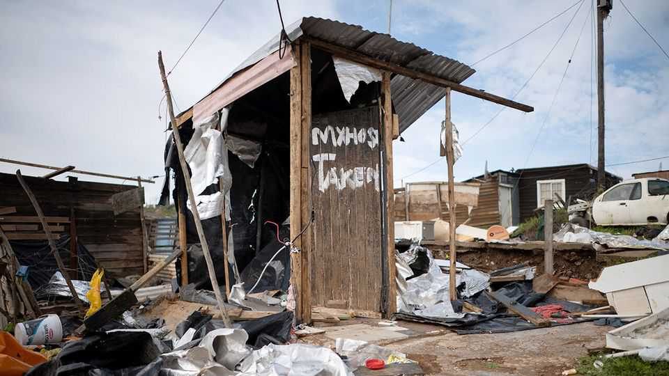

What a surge of anti-migrant protests says about South Africa
It is too easy for xenophobic vigilantes to take advantage of poverty and a weak state
June 25th 2026

As anti-foreigner protests have swept South Africa in recent months, their rallying cry has become increasingly audible: “Abahambe! Sekwanele!” The words, in isiZulu, the most commonly spoken language in South African homes, can be translated as, “They must go! Enough!”
In the first half of 2026 there have already been more anti-migrant protests than in any other year of the 2020s, according to ACLED, a violence-monitoring group. And there is growing concern in the government that on June 30th there will be a violent climax. March and March, a vigilante group, has given the date as a “deadline” for illegal immigrants to leave South Africa. It also pledges to take to the streets that day in what some analysts worry could be an echo of July 2021. Back then the arrest of Jacob Zuma, South Africa’s former president, led to the worst civil unrest since the end of white rule in 1994.
March and March, founded in 2024 by Jacinta Ngobese-Zuma (seemingly no relation to Mr Zuma), a DJ, is the latest anti-foreigner group to emerge in recent years. Like Operation Dudula, an outfit formed in 2021, it holds protests against immigrants living in poor urban areas. It goes door to door, asking other Africans for proof of their immigration status. It has tried to block migrants’ access to public hospitals. Many shops run by foreigners have been looted. There are “Idi Amin’s Uganda vibes”, says Fred Khumalo, a writer, referring to the campaign that chased people of Asian descent from the east African country in the 1970s.

Vigilante groups reflect—and exacerbate—xenophobia among the public. In 2025, 42% of South Africans polled by the Human Sciences Research Council (HSRC), a state-funded research group, wanted “no immigrants”, the highest share since surveys began in 2003 (see chart). The share welcoming “all immigrants” fell from a peak of 43% in 2008 to 15% in 2024 and 2025. The International Social Survey Programme, another poll, found in 2023 that 70% and 74% of South Africans say, respectively, that immigrants take away jobs and cause crime (the highest shares among all 29 nationalities surveyed except for Russians, who were more likely to believe immigrants caused crime).
Economists generally argue that immigrants are not to blame for South Africa’s high rates of joblessness and crime. Research by both the World Bank and the OECD has found that foreigners are net job creators because they set up firms and add to consumer demand. The Helen Suzman Foundation, an NGO, has pointed out that foreigners commit fewer crimes on average than South Africans. Census data suggest that only around 5% of the population is foreign-born, a share that has not changed much in recent years.

Why, then, has there been a spike in anti-migrant sentiment? It may be that research is out of date or does not capture illegal migration or the effects in the informal economy, where many African migrants toil as farm workers or nannies. The HSRC data suggest that anti-migrant views are hardening the most among the least affluent. The realities in poor areas could be escaping researchers.
Yet opinion is also being shaped by campaigns that scapegoat Africans. These include online movements as well as offline ones. Many of the same online activists involved in Operation Dudula have re-emerged in 2026, notes Kyle Findlay of Murmur Intelligence, a data-analytics firm.
Many politicians have taken a strong anti-migration stance, too. ActionSA, led by a former mayor of Johannesburg, has welcomed a member of Operation Dudula as a candidate for local elections in November. Gayton McKenzie, the leader of the Patriotic Alliance and a cabinet minister in the coalition government, has a history of incendiary statements about immigrants. UMkhonto weSizwe (MK), the party founded in 2023 by Mr Zuma (the country’s most famous Zulu), is backing March and March, whose protests include open displays of Zulu nationalism. The HSRC poll finds that of South Africa’s nine provinces, opposition to immigrants is greatest in KwaZulu-Natal, the Zulu stronghold.
The security services seem better prepared for June 30th than they were in 2021. On June 7th President Cyril Ramaphosa said that protesters “deserved to be heard” but could not take the law into their own hands. Police and the private security firms that proved crucial to responding in 2021 are anticipating hotspots. The police minister has cancelled all leave and has said the army will be called up if needed.
Yet even if less damage is done on the day, South Africa’s brand is tarnished. Several countries have organised repatriation flights or bus journeys for their citizens who fear for their safety. Africans often root for other Africans at the World Cup. But there has been little pan-African backing for South Africa. After the country’s loss in the opening match, a Kenyan posted on X: “I hope South Africa isn’t blaming African migrants...for the 2-0 beating and two red cards.” ■
Sign up to the Analysing Africa, a weekly newsletter that keeps you in the loop about the world’s youngest—and least understood—continent.